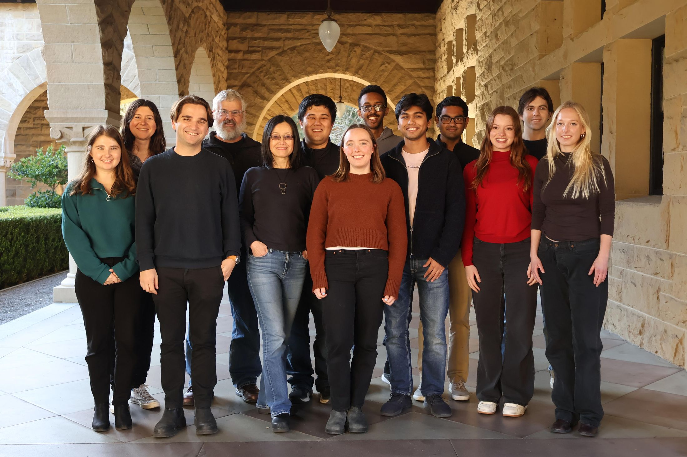

Welcome to the Irwin Group!
Our research uses the techniques of quantum measurement to search for new fundamental physics beyond the Standard Model.
Research
All research →
Dark Matter Radio
Tunable resonant circuits that scan for axion and hidden-photon dark matter, like an AM radio tuning between stations.

Radio-frequency Quantum Upconverters
Josephson-junction quantum sensors that bring beyond-SQL measurement to the VHF band.

Scanning SQUID Microscopy
Micron-scale magnetic imaging of superconducting devices and quantum coherent systems.
News
All news →- Nov 2026 AwardNicholas Rapidis wins a Springer Thesis Prize for his Ph.D. thesis.
- Sep 2026 AwardNicholas Rapidis is named a Yale Quantum Institute Fellow, joining Konrad Lehnert’s group at Yale as a postdoctoral associate. Yale Physics →
- May 2026 PressSLAC News features the group’s quantum sensing work: Building the quantum toolbox.